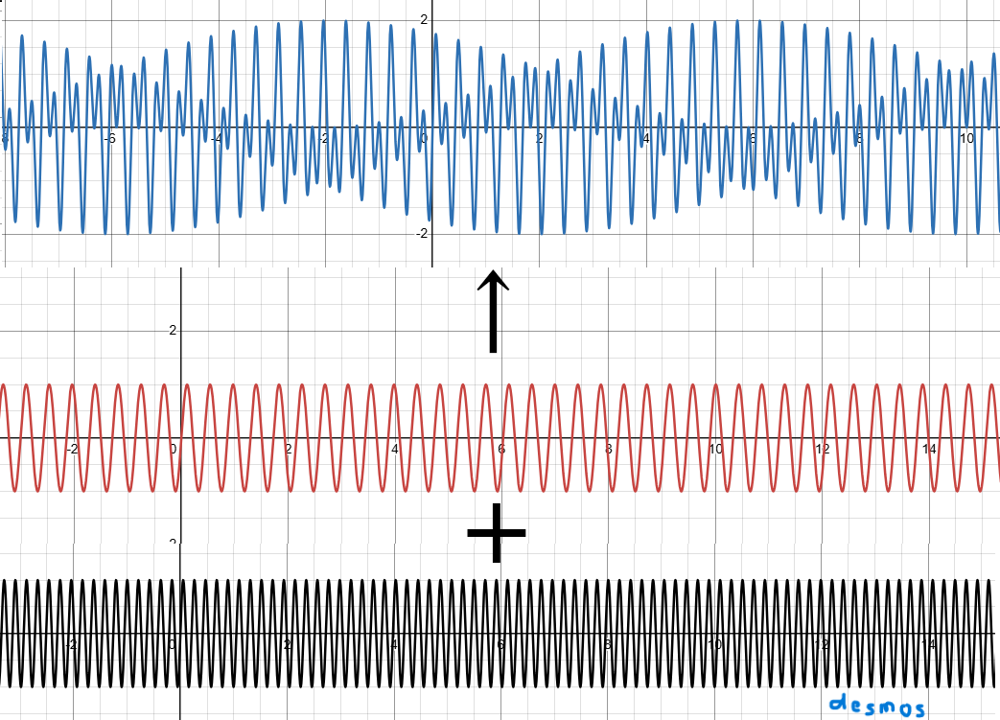

(1)和音について
人間の耳(脳)は周波数の比が簡単な整数の比であらわされる複数の音が混ざり合うと 気持ちいいと感じます。逆に、簡単な整数の比であらわせない音が混ざると不協和音になります。
A
B
Aは440Hz,550Hz,660Hzの4:5:6で表せる音、Bは409Hz,457Hz,509Hzというこれ以上簡単にならない音です。
(2)きれいな響きにするには
和音で、微妙に音程がずれているとうなりが発生します。

純正律のドミソ
平均律のドミソ
図であらわすとこんな感じです。(sin波の合成 で画像を検索すると出てくるかも) ※音と図は関係ありません
上の数直線のそれぞれの幅がオクターブです。 このように、音の位置によって音の周波数の差が変わってしまうので、 音の位置に関係なく音を等分する目安が必要ということで、セントがあります。